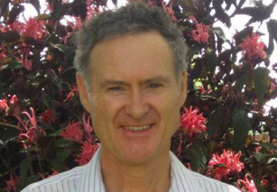

Chris Rhodes - BHSc. ND. DH. DHM. NZ Registered

With a Bachelor of Health Science from Charles Sturt University, and over 34 years experience
Chris Rhodes is a name you can trust.
Furthering his qualifications Chris has a Naturopathic Diploma, Diploma in Homeopathy, Diploma
in
Herbal Medicine, and a Diploma in Natural Therapeutics all from the South Pacific College of
Natural Therapies; along with qualifications in Homeobotanical’s and Craniosacral Therapies.
Chris is also New Zealand Registered and a member of the New Zealand Homeopathic Society.